Your goal is to create a GIT repository and push any file in it
Task 1: Understand what is a Version Control System
Git is important as it enables multiple people in a team to work
together. It is a version control system.
To find out what a version control system is, go to the below youtube
video.
If you still are not sure what a version control system is, then feel
free to google or search in youtube videos. You could also see the
videos again and again to refresh your skills
Task 2: Understand what is Git
Its great that you know what is a version control system. Lets move on
to Git.
To find out what is Git, go to the below youtube video.
If you still are not sure what Git is, then feel free to google or
search in youtube videos. You could also see the videos again and again
to refresh your skills
One of the examples of some more Git videos are here
Task 3: Practice in playground project : Install VS Code
Visual Studio Code helps to write code better and easier. Install your
VS Code here : https://code.visualstudio.com/Download
Your can also google to find out how to install the VS code on your PC
but it should be easy to do so.
You must have already created a Git repo in the earlier tasks, open the
same in Visual Studio Code.
For hint you could see in this video how to open a folder. Keep in mind
that you have to open the git repo/folder that you already created.
Task 4: Welcome to your own playground!
In this task you will download the playground repository and establish
it in VSCode with git
A sample playground git repository is already prepared for you and you
should be good to go.
To use the playground repo, first open Visual Studio Code(VS Code) in
your PC.
On the top you can see a tab called 'Terminal'
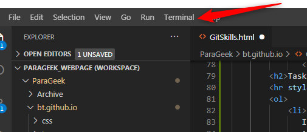
Now you can see that a window open at the bottom of VS Code. Which
drive do you currently see?
For example in the below case our visual studio code opens in E:
Drive under ParaGeek folder
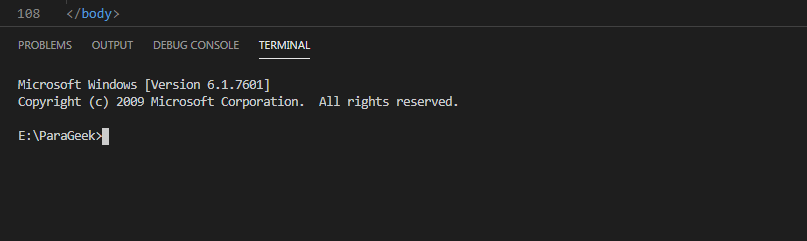
In your case it could be also just C: drive . Its okay!
If you want to store your playground files under D drive then just
type 'd:' as shown below. This will make accessing your files easier
and quicker
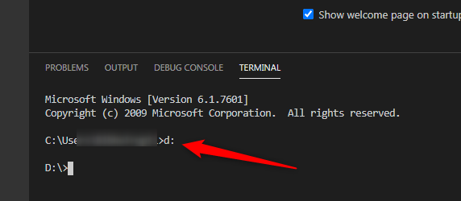
Now in your terminal just type 'git clone
https://github.com/parageek/PlayGroundRepo.git' and press enter
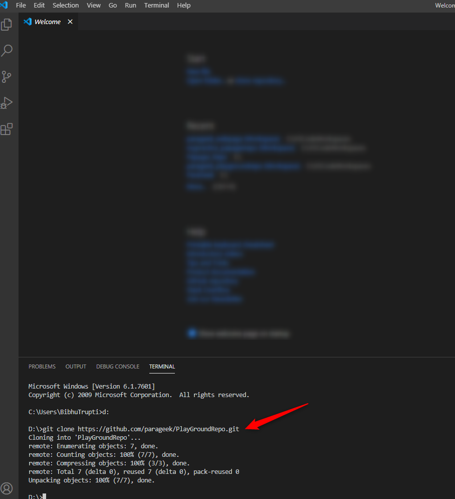
If this step is successful, you will get a new folder automatically
when you open your corresponding drive.
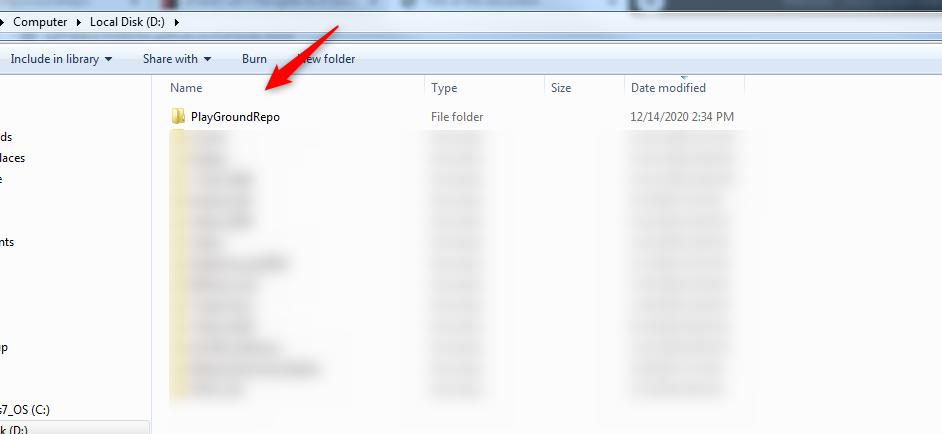
Next go inside the PlaygroundRepo by doing 'cd PlayGroundRepo' and
check 'git status'.These steps are shown in the figure
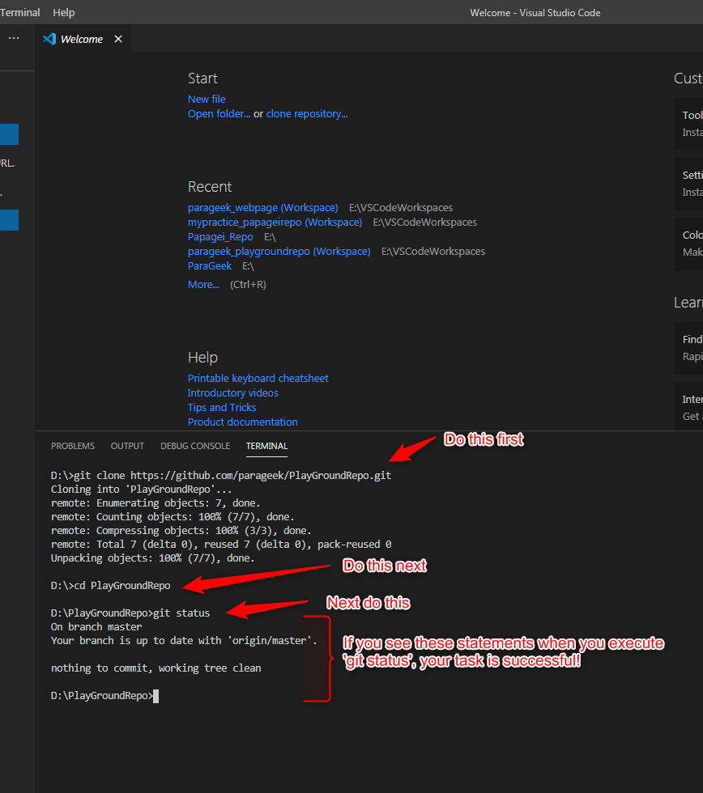
Task 5: Learning to push your changes to github in playground repo
Here you will now make some changes and push them in git repo.
You should push your changes before you finish your tasks for the day. It would be good to push everyday once.
Open the playground repo that you created in your earlier task in VSCode
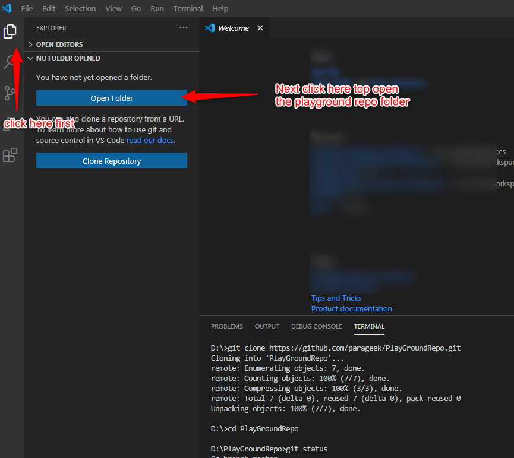
You will get a pop up window as shown below, just go to your folder and press selectFolder
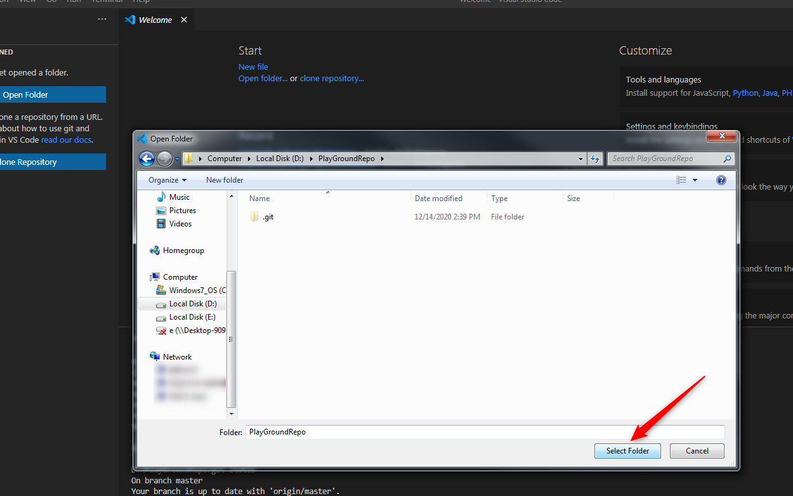
Now you can see a file index.html in your left window. Double click on it to open the index.html and see the content there
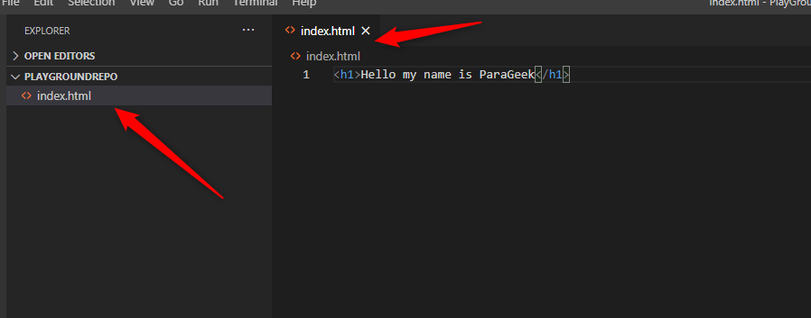
Currently it is showing 'Hello my name is ParaGeek' , you have to change it to Hello my name is xyz and press 'ctrl+s' to save it.
Now if you see the differences it will show you the changes and your task is to push the changes. See below figure for the steps
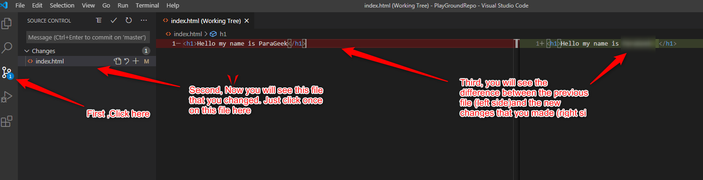
Now you have to commit your changes before pushing.
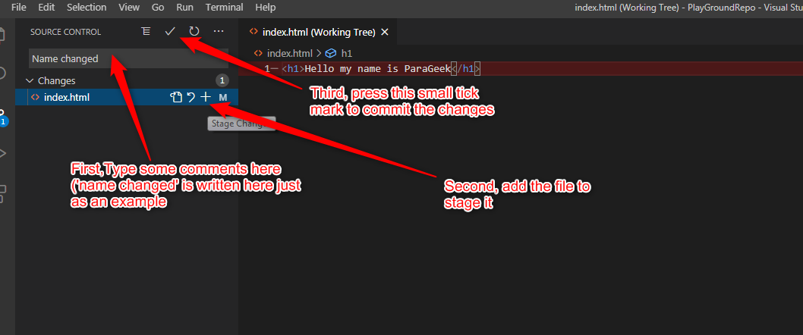
Now your 'git status' should show that you have done 1 commit. Just push your changes.
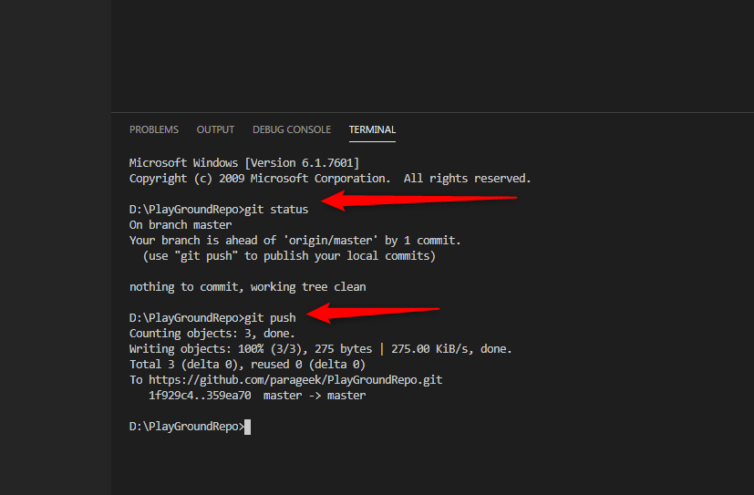
Now go to your playground repo(https://github.com/parageek/PlayGroundRepo) and check if your changes appear .One way to verify this is check if the comments are the same as you had given
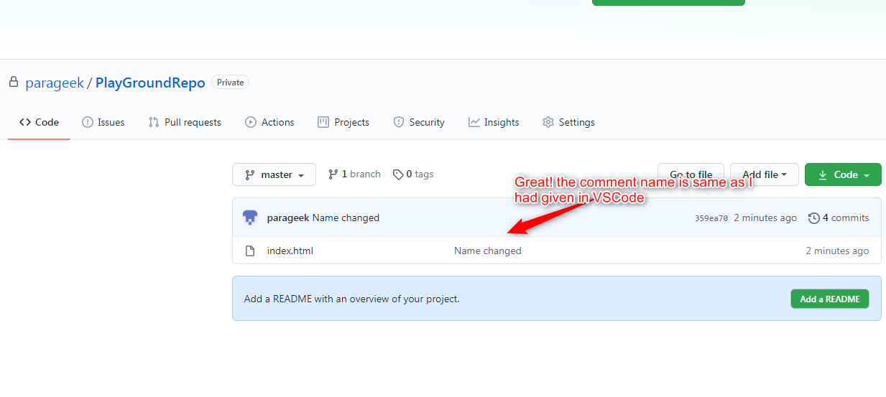
If you see the changes then your task is completed! Congratulations!
Task 6: Your last task is to repeat and practice
In the last task you changed the content of index.html to Hello my name is xyz. Now you replace to xyz to your name and push your changes.
Add some more content in index.html as what is your full name or where you come from etc and push your changes